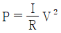
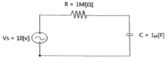
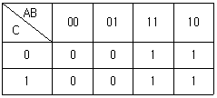

통신선로기능사 (2013-03-17 기출문제)
1과목: 전기전자개론
1. 12[V] 직류전원에 전구를 연결하였을 때 흐르는 전류는 0.2[A]이다. 이때의 전구 저항 값은 얼마인가?
- 60[Ω]
- 48[Ω]
- 24[Ω]
- 12.2[Ω]
(정답률: 63%)

2. 다음 중 전력 P를 나타낸 것으로 잘못된 것은?
- P = I2 R
- P = I V
- P = R2 V

(정답률: 63%)
3. 콘덴서 C[F]가 연결된 교류회로에서의 전압과 전류에 대한 위상의 설명으로 맞는 것은?
- 전류가 전압보다 위상이 90° 늦다.
- 전압이 전류보다 위상이 90° 늦다.
- 전류가 전압보다 위상이 180° 늦다.
- 전압과 전류의 위상이 같다.
(정답률: 65%)
4. V = 220sin(400πt + 30°)인 순시 전압의 주파수는 얼마인가?
- 400[Hz]
- 220[Hz]
- 200[Hz]
- 30[Hz]
(정답률: 62%)
5. 다음 중 PNP 트랜지스터에 대한 설명으로 맞는 것은?
- 베이스 영역에서 다수 반송자는 정공이다.
- 베이스의 전극은 P형 반도체이다.
- 컬렉터는 베이스 전극에 비해 높은 전위를 가한다.
- 이미터와 베이스 사이에는 순방향의 전원을 가한다.
(정답률: 40%)
6. 다음 중 MSI(Medium Scale Integration)의 설명으로 바른 것은?
- SSI(Small Scale Integration)의 반대인 것이다.
- LSI(Large Scale Integration)와 같은 것이다.
- 한 IC(Integrated Circuit) 중 1,000 소자 이상인 것이다.
- 한 IC(Integrated Circuit) 중 100~1000 소자를 포함한 것이다.
(정답률: 85%)
7. 다음 중 콘덴서 입력형 평활회로에 대한 설명으로 틀린 것은?
- 용량 C가 클수록 정류기에 흐르는 전류의 기간이 짧다.
- 용량 C가 클수록 정류기에 흐르는 전류 감소한다.
- 용량 C가 클수록 출력전압의 맥동률은 작아진다.
- 정류기(다이오드)에 흐르는 전류는 펄스형이다.
(정답률: 74%)
8. 다음 중 A급 증폭기의 동작점 위치와 유통각을 맞게 설명한 것은?
- 동작점 : 정특성 곡선에서 콜렉터 전류의 차단점, 유통각 : 180°
- 동작점 : 정특성 곡선상의 중앙부, 유통각 : 360°
- 동작점 : 정특성 곡선에서 콜렉터 전류의 차단점 이하, 유통각 : 180° 이하
- 동작점 : 정특성 곡선상의 중앙부, 유통각 : 180°
(정답률: 83%)
9. 이상적인 연산 증폭기에서 동상신호 제거비(CMRR)는 얼마인가?
- 0
- 1
- 100
- 무한대
(정답률: 85%)
10. B급 전력증폭회로에서 효율(η)은 얼마인가?
- 78.5[%] 이상
- 78.5[%]
- 80[%]
- 100[%]
(정답률: 77%)
11. 발진회로에서 발진 주파수가 변동하는 원인과 관계가 적은 것은?
- 부하의 변동
- 주위온도의 변화
- 기생 진동
- 전원 전압의 변동
(정답률: 77%)
12. 다음 중 수정 발진회로의 가장 큰 특징은?
- 주위 온도에 큰 변화가 없다.
- 발진주파수의 안정도가 높다.
- 부하 변동에 따른 발진주파수 변동이 없다.
- 잡음이 경감된다.
(정답률: 75%)
13. 펄스 변조에서 아날로그 펄스 변조방식이 아닌 것은?
- PAM
- PCM
- PWM
- PPM
(정답률: 84%)
14. 다음 중 아날로그 신호의 디지털 변환(변조) 과정에 속하지 않은 것은?
- 표본화
- 양자화
- 부호화
- 복호화
(정답률: 86%)
15. 다음 그림에서 시정수는 얼마인가?

- 0.1 [sec]
- 10 [sec]
- 1 [sec]
- 100 [sec]
(정답률: 67%)
2과목: 전자계산기일반
16. 미사일을 추적하거나, 유도탄을 유도하려면 어떤 컴퓨터를 이용해야 하는가?
- 아날로그 컴퓨터
- 특수용 컴퓨터
- 하이브리드 컴퓨터
- 범용 컴퓨터
(정답률: 95%)
17. 다음 기억장치의 계층구조에서 속도가 빠른 순서대로 나열한 것은?
- 레지스터 – 캐시메모리 – 주기억장치 - 보조기억장치
- 레지스터 – 보조기억장치 – 캐시메모리 - 주기억장치
- 보조기억장치 – 주기억장치 – 캐시메모리 - 레지스터
- 보조기억장치 – 캐시메모리 – 주기억장치 – 레지스터
(정답률: 77%)
18. 다음은 입출력 채널(Chanel)에 대한 설명이다. 맞지 않은 것은?
- 중앙처리 장치(CPU)의 도움이 반드시 있어야 입출력 동작을 수행한다.
- 중앙처리 장치(CPU)와 입출력 장치의 속도 차를 해결하기 위해 사용한다.
- 시스템의 처리능력을 향상시키는 일을 한다.
- 하나의 명령으로 다수의 블록을 입출력 할 수 있다.
(정답률: 64%)
19. 2진수 1100을 2의 보수(2's complement) 방시긍로 표현된 것은?
- 0011
- 1111
- 0100
- 1101
(정답률: 51%)
20. 두 개의 2진수 1110과 0110을 더한 후 10진수로 표현하면?
- 21
- 20
- 19
- 18
(정답률: 85%)
21. 다음 카르노맵(karnaugh map)을 불 대수를 이용하여 나타내면?

- A + B
- A + C
- A
- B
(정답률: 85%)
22. 다음 중 기계어의 설명으로 거리가 먼 것은?
- 프로그램의 유지보수가 용이하다.
- 호환성이 없고 기계마다 언어가 다르다.
- 프로그램의 실행속도가 빠르다.
- 2진수를 사용하여 데이터를 표현한다.
(정답률: 40%)
23. 다음 중 순서도의 장점이 아닌 것은?
- 프로그램 흐름을 단순화 하여 분석이 명료해짐
- 논리적인 오류를 쉽게 파악할 수 없음
- 도식화된 기호를 이용하므로 다른 사람이 쉽게 이해할 수 있음
- 원시프로그램의 작성을 용이하게 하여 코딩작업이 간단해짐
(정답률: 82%)
24. 엑셀(Excel)의 함수가 아닌 것은?
- SUM
- DIVIDE
- COUNTIF
- LOOKUP
(정답률: 96%)
25. 파워 포인트의 기능이 아닌 것은?
- 애니메이션 기능이 없다.
- 멀티미디어 자료를 삽입할 수 있다.
- 자동으로 슬라이드를 넘길 수 있다.
- 폰트의 크기 조절이 가능하다.
(정답률: 93%)
26. 유선전송 측정에서 디지털 측정 항목별 약어를 설명한 것 중 틀린 것은?
- 비트 오율 : Bit Error Rate
- 블록 오율 : Block Error Rate
- 오류 초율 : Error Free Seconds
- 과유류 초율 : Severely Error Seconds
(정답률: 79%)
27. 선로 분포정소에서 1차 정수 요소와 단위가 틀린 것은?
- 저항(R), [Ω/km]
- 인덕턴스(L), [H/km]
- 정전용량(C), [F/km]
- 누설 컨덕턴스(G), [L/km]
(정답률: 80%)
28. 다음 중 전송선로에서 누화의 종류가 아닌 것은?
- 직접 누화
- 송신 누화
- 원단 누화
- 간접 누화
(정답률: 58%)
29. 전송선로의 단락 임피던스가 400[Ω]이고 개방 임피던스가 900[Ω]이라면 이 전송선로의 특성임피던스는?
- 600[Ω]
- 700[Ω]
- 800[Ω]
- 900[Ω]
(정답률: 78%)
30. PCM 통신방식에서 Analog의 Digital 변환 3단계 과정이 아닌 것은?
- 표본화(Sampling)
- 부호화(Encoding)
- 비선형화(Nonlinear)
- 양자화(Quantizing)
(정답률: 83%)
3과목: 통신선로일반
31. T1회선과 E1회선의 전송속도가 알맞게 연결된 것은 어느 것인가?
- T1 – 1.544[Mbps], E1 – 2.048[Mbps]
- T1 – 3.488[Mbps], E1 – 5.422[Mbps]
- T1 – 51.84[Mbps], E1 – 44.736[Mbps]
- T1 – 155.520[Mbps], E1 – 622.080[Mbps]
(정답률: 84%)
32. 펄스코드변조의 과정으로 순차적으로 올바르게 연결된 것은 어느 것인가?
- 아날로그신호 – PAM - PCM
- 아날로그신호 – PPM - PCM
- 아날로그신호 – PWM - PCM
- 아날로그신호 – QAM – PCM
(정답률: 86%)
33. 25페어 폼스킨(F/S)케이블의 L1(Tip 선), L2(Ring 선) 심선 색상이 맞는 것은?
- 1번 심선 = 백, 청
- 7번 심선 = 적, 녹
- 13번 심선 = 흑, 갈
- 19번 심선 = 황, 회
(정답률: 82%)
34. STP 케이블을 UTP 케이블과 비교하였을 때 틀린 것은?
- 금속박막으로 둘러싸인 차폐된 구조이다.
- 심신끼리의 혼선이 적다.
- 외부 전자파의 간섭이 최대화 된다.
- 케이블링 취급이 어렵다.
(정답률: 78%)
35. 동축케이블에서 최소 감쇠량 조건을 위한 최적비는?
- 외부도체외경/내부도체내경
- 외부도체내경/내부도체외경
- 내부도체외경/외부도체외경
- 내부도체외경/외부도체내경
(정답률: 80%)
36. 다음 중 광가입자 시스템(OLT)과 사용되는 광수동소자(RN)가 바르게 연결된 것은?
- WDM PON – 광 스플리터
- WDM PON – AWG(배열 도파로 격자)
- Ethernet PON – 광 서큐레이터
- Ethernet PON – 아이소레이터
(정답률: 74%)
37. 다음 중 광통신용 발광소자의 발광면에서 나오는 광다발의 위상과 주파수가 일치하고 집속성이 좋은 것은?
- 코히런트(coherent) 광
- 인코히런트(incoherent) 광
- 반사광
- 편광
(정답률: 66%)
38. 다음 중 광통신에 사용되는 레이저 다이오드의 종류가 아닌 것은 무엇인가?
- DFB 레이저
- VCSEL 레이저
- Fabry-Perot 레이저
- APD 레이저
(정답률: 65%)
39. 광케이블 포설에 관한 설명으로 틀린 것은?
- 지하관로의 선단에서 견인차로 인입시키는 작업을 선단견인 작업이라 한다.
- 견인작업의 종류는 선단견인, 중간견인, 선단중간견인이 있다.
- 광케이블의 포설속도는 50m/분으로 한다.
- 인력견인 작업시는 8자형 감기작업으로 시공한다.
(정답률: 80%)
40. 광케이블의 루트 선정시 조건으로 틀린 것은?
- 최단거리 및 인입거리가 짧은 구간
- 교통이 편리하고 유지보수가 쉬운 구간
- 풍수해 등 재해의 염려가 없는 구간
- 중계소 등 기설시설과 관계없는 구간
(정답률: 87%)
41. 다음 중 가공선로시설에 통신케이블의 구비조건으로 틀린 것은?
- 전기적으로 완전 부도체일 것
- 항장력 등 기계적 강도가 강할 것
- 가설 및 작업에 대한 시공이 용이할 것
- 유효 수명이 길고 가격이 저렴할 것
(정답률: 37%)
42. 케이블 포설 작업시 고려사항 중 틀린 것은?
- 균일한 속도로 포설한다.
- 철거속도와 포설속도는 다르다.
- 케이블에 과대한 장력이 걸리지 않도록 한다.
- 케이블에 손상이 가지 않도록 한다.
(정답률: 84%)
43. 다음 중 통신선로 전력유도 방지책으로 틀린 것은?
- 양 선로의 상호 거리를 멀리한다.
- 양 선로를 최대한 평행하게 한다.
- 금속 차폐된 선로를 사용한다.
- 대지평형도를 개선한다.
(정답률: 64%)
44. 다음 중 전송량의 이득 단위로 옳은 것은?
- 볼트[V]
- 암페어[A]
- 데시벨[dB]
- 옴[Ω]
(정답률: 80%)
45. 1[dB]는 몇 [Neper]인가?
- 0.114
- 0.115
- 0.116
- 0.117
(정답률: 80%)
4과목: 선로설비기준
46. 공사를 감리한 용역업자는 공사의 준공설계도서를 얼마나 보관하여야 하는가?
- 당해 공사를 감리한 후 5년간
- 하자담보책임기간이 종료될 때까지
- 당해 공사가 발주한 후 10년간
- 당해 공사가 설계된 후 10년간
(정답률: 91%)
47. 정부가 국가정보화의 표준화를 추진하는 목적으로 적합하지 않은 것은?
- 정보통신의 효율적인 운영
- 정보통신의 호환성 확보
- 정보의 공동활용의 촉진
- 기술인력의 양성
(정답률: 89%)
48. 통신공동구·맨홀 등은 통신케이블의 수용과 설치 및 유지·보수 등에 필요한 공간과 부대시설을 갖추어야 하는데 관로는 차도의 경우 지면으로부터 몇 [m] 이상의 깊이에 매설하여야 하는가?
- 0.3
- 0.5
- 1
- 1.5
(정답률: 63%)
49. 공사를 발주 한자는 사용 전 검사 전에 시장, 군수, 구청장에게 확인 받아야 할 것은 무엇인가?
- 설계도
- 도급 계약서
- 공정도
- 공사업 등록증
(정답률: 68%)
50. 해저통신선과 해저 강전류전선의 이격거리는 몇 [m] 이내의 거리에 접근하여 설치하여서는 아니 되는가?
- 500[m]
- 600[m]
- 700[m]
- 800[m]
(정답률: 94%)
51. 전송 품질을 저해시키는 요인이 아닌 것은?
- 전원부(축전) 시설보강
- 실내 소음
- 회선 잡음
- 송수화자의 통화 능력
(정답률: 20%)
52. 전송설비 및 선로설비는 전력유도로 인한 피해가 없도록 건설·보전되어야 하는데 전력유도전압의 구체적 산출방법에 대한 세부기술기준은 누가 이를 정하여 고시하는가?
- 대통령
- 국무총리
- 국립전파연구원장
- 방송통신위원회
(정답률: 78%)
53. 방송통신설비에 사용되는 전원설비는 그 방송통신설비가 최대로 사용되는 때의 전력을 안정적으로 공급할 수 있는 용량으로서 동작전압과 전류의 변동률을 정격전압 및 정격전류의 몇 퍼센트 이내로 유지할 수 있는 것이어야 하는가?
- ±5%
- ±10%
- ±15%
- ±20%
(정답률: 46%)
54. 전기통신기본법의 목적을 달성하기 위하여 전기통신에 관한 기본적이고 종합적인 정부의 시책을 강구하여야 하는 기관은?
- 지방자치단체
- 지식경제부
- 방송통신위원회
- 전기통신사업자
(정답률: 82%)
55. 정보통신공사 감리원은 무엇에 적합하도록 공사를 감리하여야 하는가?
- 품질기준 및 안전기준
- 기술기준 및 설계기준
- 공사시방서 및 내역서
- 설계도서 및 관련규정
(정답률: 39%)
56. 기간통신사업자가 국선을 몇 회선 이상 인입하는 경우에 케이블을 국선수용단자반에 접속·수용하여야 하는가?
- 3회선
- 5회선
- 15회선
- 25회선
(정답률: 36%)
57. 다음 중 기술기준에서 요구하는 옥내통신선의 이격거리에서 300[V]초과 전선과의 최소 이격거리는?
- 10[cm]
- 15[cm]
- 20[cm]
- 25[cm]
(정답률: 18%)
58. 다음 중 구내통신설비 장치함에 사용되는 주요 설비가 아닌 것은?
- 분기기 및 분배기
- 동축케이블
- 증폭기
- 병렬단자
(정답률: 73%)
59. 다음 중 구내통신설비기준에 따른 옥내·외 배관 기준이 아닌 것은?
- 배관은 외부의 압력 또는 충격 등으로부터 선로를 보호할 수 있는 기계식 강도를 가진 내부식성 금속관 또는 합성수지제 전선관을 사용하여야 한다.
- 배관의 내경은 배관에 수용되는 케이블단면적의 총 합계가 배관단면적의 23퍼센트 이하가 되도록 하여야 한다.
- 배관의 굴곡은 가능하면 완만하게 처리하여야 하고, 곡률반지름은 배관 안지름의 6배 이상으로 한다.
- 배관의 1구간에 있어서 굴곡개소는 3개소 이내이어야 한다.
(정답률: 73%)
60. 다음 중 통신케이블의 유지·관리에 필요한 부대설비에 해당되는 항목은?
- 조명·배수·소방·전력 및 접지시설 등
- 조명·배관·소방·환기 및 접지시설 등
- 조명·배수·소방·환기 및 피뢰시설 등
- 조명·배수·소방·환기 및 접지시설 등
(정답률: 72%)